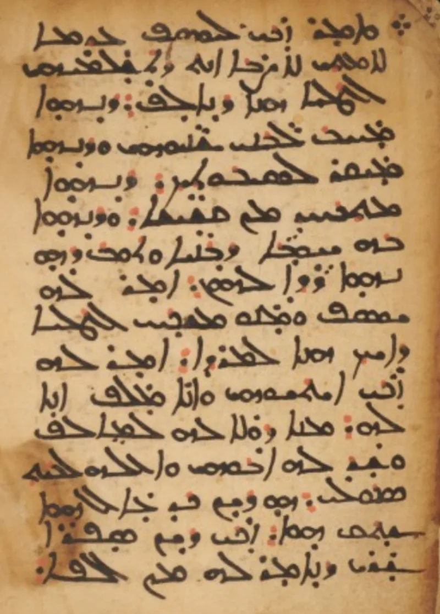
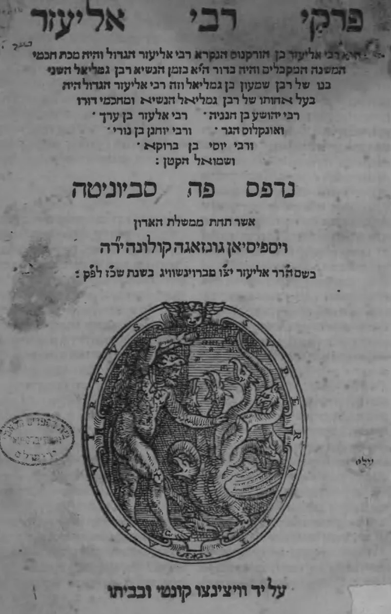

Clay birds, from a gospel the church rejected
UnrefutedNo good counter-argument has been published by Muslim scholars.
Two miracles that are not in the Gospels
The Quran gives Jesus two famous miracles the Gospels never mention. As a child he forms birds from clay and breathes life into them (Quran 3:49; 5:110).
As a baby he speaks from the cradle (Quran 19:29-33; 3:46).
Where those stories come from
The clay birds appear in the Infancy Gospel of Thomas 2:1-5. That is a Greek text from the mid-2nd century.
In the same book the boy Jesus also strikes playmates dead. The cradle speech appears in the Arabic Infancy Gospel, a Syriac-derived work of the 5th or 6th century.
Both circulated in Christian Arabia. Both are centuries older than the Quran.
What the church did with them
The church rejected these books as legend. They are not Scripture and never were.
So the question is not whether Christians accept them. It is why they appear in the Quran as history.
The Muslim answer, at full strength
Islamweb fatwa 367270 answers on three fronts. A parallel is not proof of borrowing.
The apocryphon may preserve a real event the Gospels left out, since John 21:25 says much went unrecorded. Revelation then confirms the true kernel and strips the legend — adding by Allah's leave, dropping the ugly parts.
Some Muslim writers go further. An unlettered Meccan trader could not read Greek or Syriac, so the agreement itself looks like revelation.
How strong is this argument?
Strong for you. Everyone agrees the parallels are real; only the direction is argued.
No historian treats these books as history. And the cradle scene carries its source's fingerprint.
In the Arabic Infancy Gospel the child says he is the Son of God. In the Quran the same scene says the opposite.
The Quran itself records the charge that Muhammad heard "tales of the ancients dictated morning and evening" (25:4-5).
What to say
"That story about the clay birds is in a book my church rejected as legend. Where do you think it came from?"



How they answer this — at its strongest
They say the old story kept a real event, and the Quran corrected it.
Islamweb fatwa 367270 answers on three fronts. First, a parallel is not dependence. A shared story may mean the apocryphon preserved a genuine event the canonical gospels left out. John 21:25 admits Jesus did many things that were never written down. The Quran, as revelation, confirms the true kernel and corrects the legend. It adds 'by Allah's leave' to guard tawhid, God's oneness, and it drops the morally troubling parts.
Second, the direction of the correction is telling. Random borrowing would not clean a story up. Third, some Muslim writers embrace the parallel as proof. An unlettered Meccan trader could not reach Greek or Syriac apocrypha. So agreement with ancient Christian tradition looks like evidence of revelation.
The verdict
Strong for you: both sides grant the link, and only its source is argued.
All parties concede the parallels. Only the direction is debated. The claim that the apocrypha preserved real events cannot be tested, and carries no evidence. No historian treats the Infancy Gospel of Thomas or the Arabic Infancy Gospel as history.
The cradle speech even carries its source's fingerprint. In the Arabic Infancy Gospel the infant says he is the Son of God. In the Quran the same scene is turned around to say the opposite. The unlettered trader argument fails too. Those texts circulated in Syriac Christian Arabia, and stories travel by mouth.
The Quran itself records the charge that Muhammad heard 'tales of the ancients dictated morning and evening' (25:4-5). The sober mainstream conclusion stands. The Quran retells late Christian folklore as fact.
Sources
- Austin DeArmond — 'Jesus, the Clay Birds, and the Quran' (survey of the IGT dependence)
- Gabriel Said Reynolds, The Quran and the Bible (concedes the apocryphal parallels)
- Infancy Gospel of Thomas — dating and transmission
- Islamweb Fatwa 367270 — 'Quran does not use stories from any past Books'